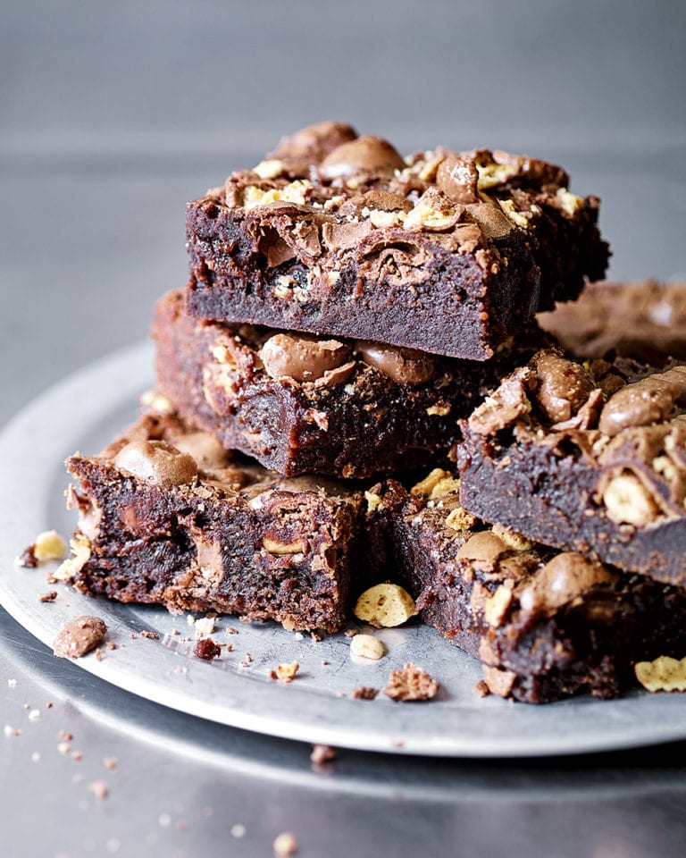

Brownie

What ia a Brownie?
Brownies are an essential sweet in any American household. There are different kinds of this delicacy. Regardless of the kind you have the best brownie is always with a glass of ice cold milk. In this recipe we will show you how to make the world's best, creamiest, most crunchy home-made brownies!
Ingredients
- 180 gram of dark chocolate
- 180 gram of butter
- 3 eggs
- 150 gram of sugar
- 75 gram of flour
Instructions
- Melt the butter, chocolate, and sugar in a bowl over some boiling water, always stirring, and removing from the water from time to time so it doesn't burn.
- Remove bowl from water and let the contents cool off.
- Add 3 eggs and a pinch of salt and mix with mixer.
- Carefully mix contents together with flour, using a mixer.
- Line the brownie form with wax paper and pour the contents out into each brownie form.
- Pre-heat the oven to 180 degrees C and bake the brownies for 35 minutes, watching out for the raw dough, and checking it with a wooden stick.
- Remove from oven and let the brownies cool off.